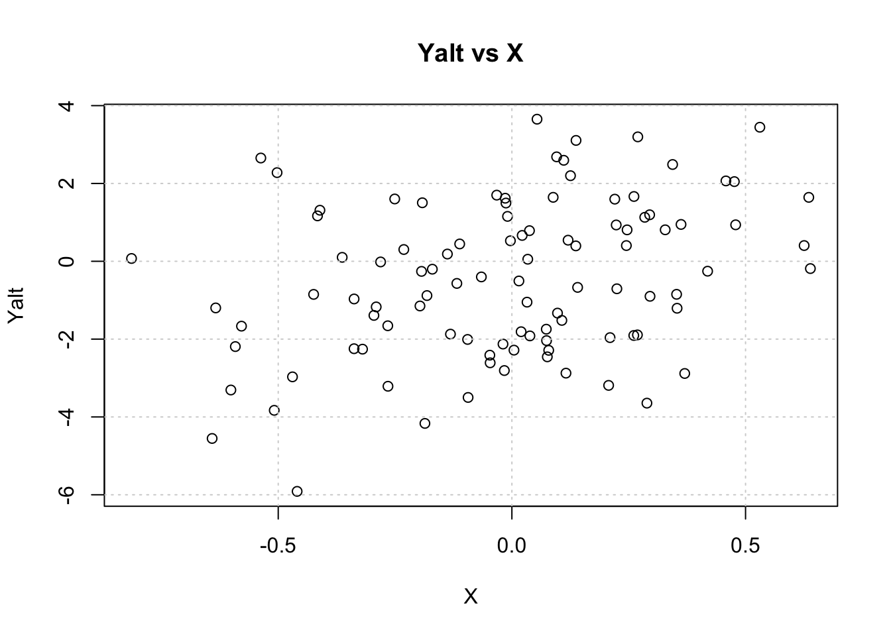
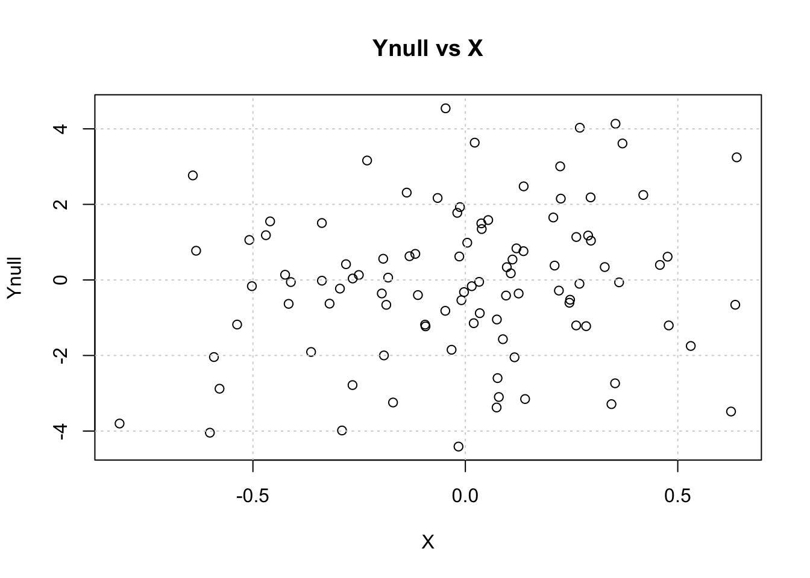
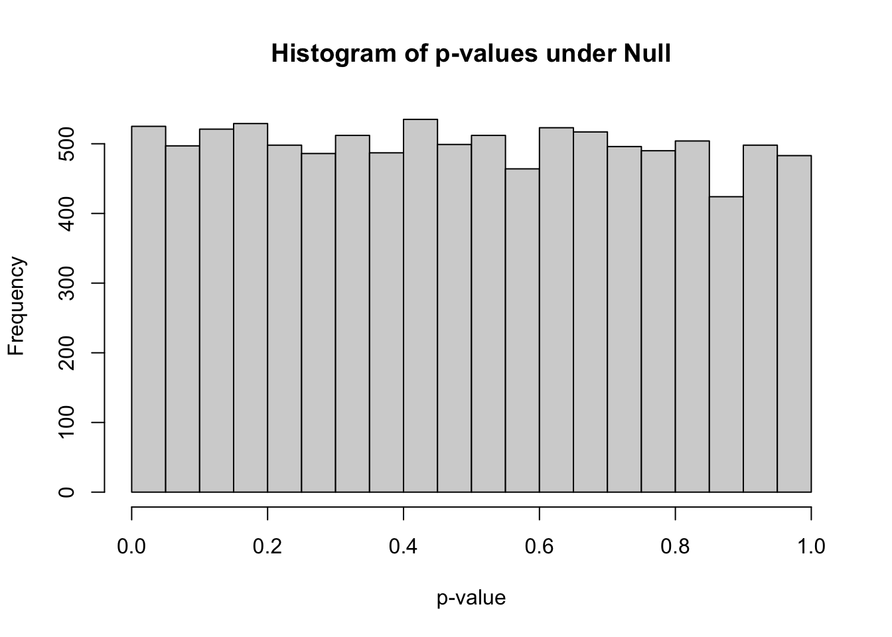
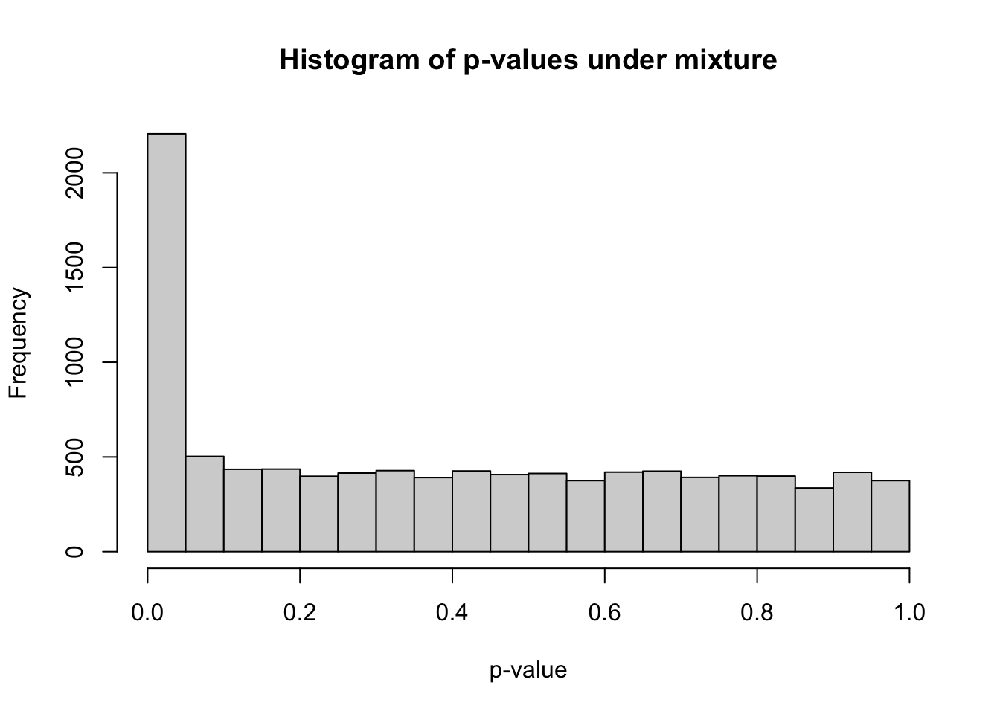
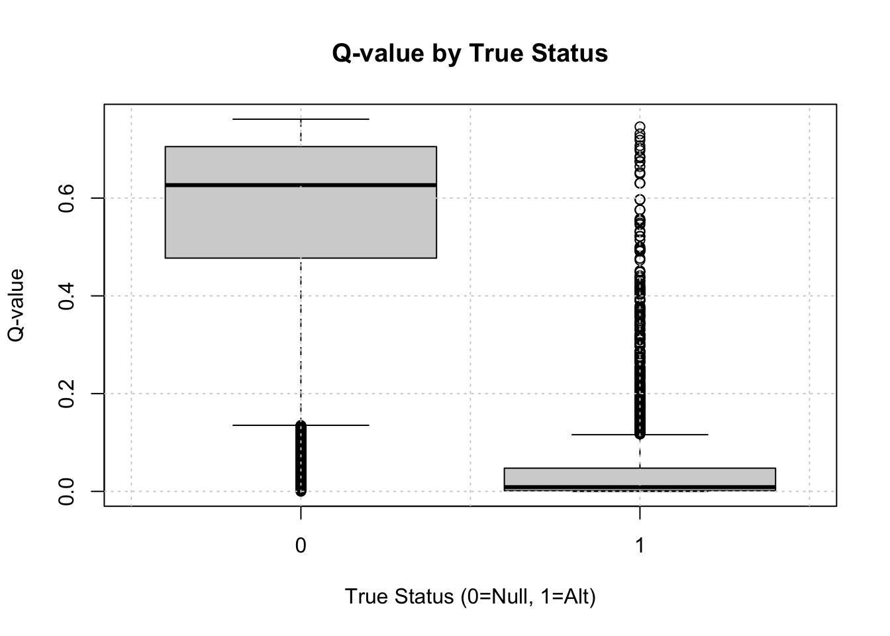
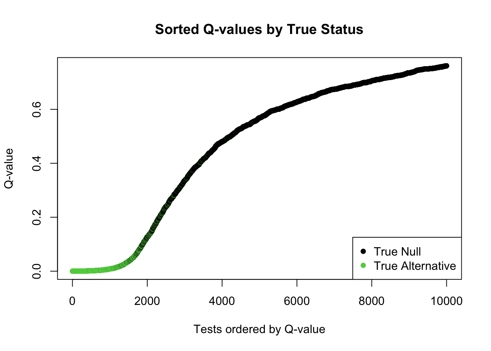
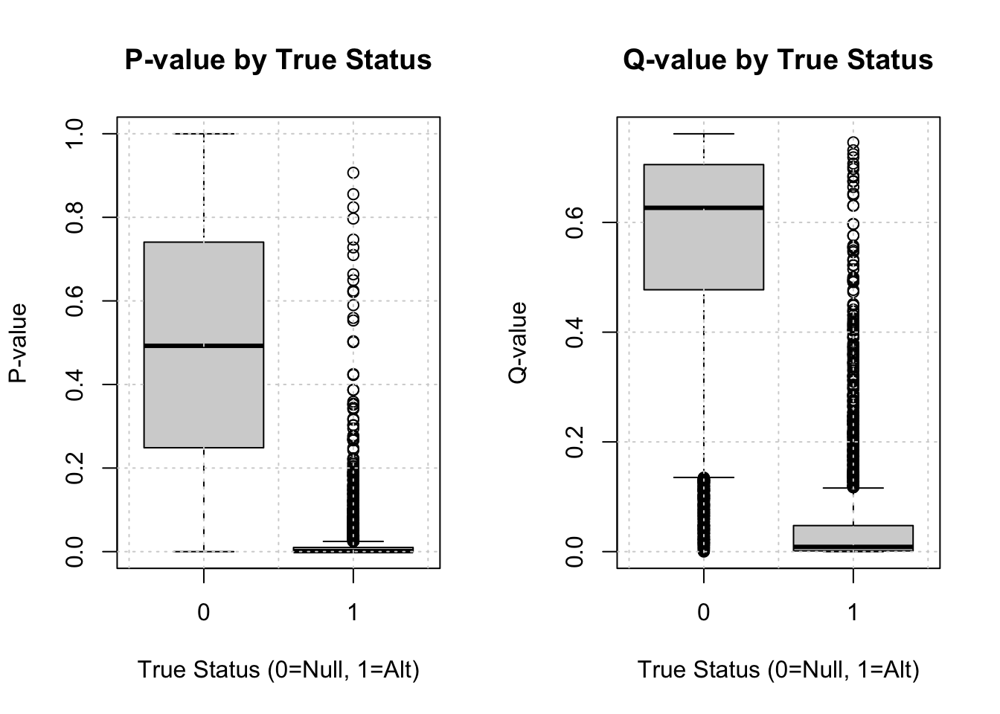
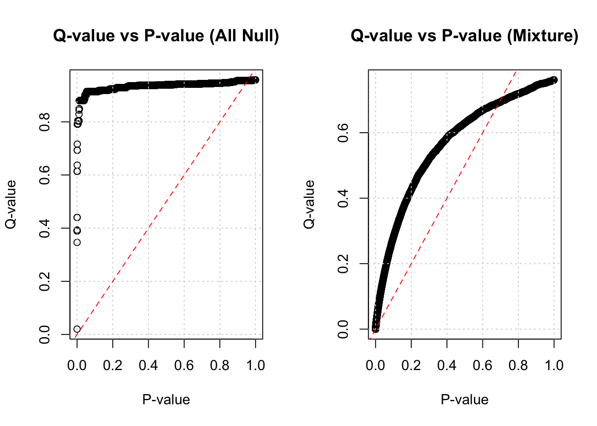

Build intuition about p-values when multiple testing is performed via simulations.
Recognize the need for multiple testing correction.
Present methods to correct for multiple testing:
Bonferroni correction
FDR (false discovery rate)
Why Do We Need Multiple Testing Correction?
When performing many statistical tests simultaneously, the probability of finding a “significant” result just by chance (a Type I error or false positive) increases substantially. This is famously illustrated by the XKCD comic on significance (link to XKCD #882). We need methods to control the overall error rate across all tests.
What Do P-values Look Like Under Null and Alternative Hypotheses?
Simulate Data: Null vs. Alternative
We’ll start by simulating data under two scenarios:
Null Hypothesis (Ynull): The outcome variable is independent of the predictor X.
Alternative Hypothesis (Yalt): The outcome variable depends on the predictor X via the relationship Yalt = X * beta + epsilon.
Simulation Parameters
First, define some parameters for the simulation.
Show the code
# Parametersnsamp =100# Number of samplesbeta =2# Effect size for the alternative hypothesish2 =0.1# Proportion of variance in Yalt explained by X (related to signal strength)sig2X = h2 # Variance of X (scaled for simplicity here)sig2epsi = (1- h2) * beta^2# Variance of the error term epsilon, ensuring desired h2sigX =sqrt(sig2X)sigepsi =sqrt(sig2epsi)print(paste("Variance of X:", sig2X))
[1] "Variance of X: 0.1"
Show the code
print(paste("Variance of Epsilon:", sig2epsi))
[1] "Variance of Epsilon: 3.6"
Generate Single Instance of Data
Simulate vectors X, epsilon (error), and Ynull (outcome under null). Then calculate Yalt.
Show the code
# Simulate predictor X and error term epsiX =rnorm(nsamp, mean=0, sd= sigX)epsi =rnorm(nsamp, mean=0, sd=sigepsi)# Generate Ynull (independent of X, here just sampling with variance related to beta for comparison)Ynull =rnorm(nsamp, mean=0, sd=beta) # Calculate Yalt = X * beta + epsiYalt = X * beta + epsi
Visualize the Data
Show the code
# Visualize Dataplot(X, Yalt, main="Yalt vs X"); grid()

Show the code
plot(X, Ynull, main="Ynull vs X"); grid()

Test Associations (Single Instance)
Test the association between Ynull and X using linear regression.
Show the code
summary(lm(Ynull ~ X))
Call:
lm(formula = Ynull ~ X)
Residuals:
Min 1Q Median 3Q Max
-4.3548 -1.1589 0.0782 1.3735 4.6291
Coefficients:
Estimate Std. Error t value Pr(>|t|)
(Intercept) -0.0395 0.1951 -0.202 0.840
X 1.0095 0.6240 1.618 0.109
Residual standard error: 1.95 on 98 degrees of freedom
Multiple R-squared: 0.02601, Adjusted R-squared: 0.01607
F-statistic: 2.617 on 1 and 98 DF, p-value: 0.1089
Question: What is the p-value of the association between Ynull and X? Is it significant at the α=0.05 level?
Now test the association between Yalt and X.
Show the code
summary(lm(Yalt ~ X))
Call:
lm(formula = Yalt ~ X)
Residuals:
Min 1Q Median 3Q Max
-4.5453 -1.4809 0.1231 1.2189 4.1808
Coefficients:
Estimate Std. Error t value Pr(>|t|)
(Intercept) -0.4244 0.1891 -2.244 0.0271 *
X 2.0521 0.6050 3.392 0.0010 **
---
Signif. codes: 0 '***' 0.001 '**' 0.01 '*' 0.05 '.' 0.1 ' ' 1
Residual standard error: 1.89 on 98 degrees of freedom
Multiple R-squared: 0.1051, Adjusted R-squared: 0.09595
F-statistic: 11.51 on 1 and 98 DF, p-value: 0.001001
Question: What is the p-value of the association between Yalt and X? Is it significant at the α=0.05 level?
Calculate the Empirical Distribution of P-values
To understand the distribution of p-values, we need to repeat the simulation many times.
Convenience Function fastlm
We’ll run 10,000 regressions. A simplified function fastlm can speed this up compared to repeated calls to lm().
Show the code
fastlm =function(xx,yy) {## compute betahat (regression coef) and pvalue with Ftest## for now it does not take covariates df1 =2# DFs for model with predictor df0 =1# DFs for null model (intercept only) ind =!is.na(xx) &!is.na(yy) xx = xx[ind] yy = yy[ind] n =sum(ind) xbar =mean(xx) ybar =mean(yy) xx = xx - xbar # Center X yy = yy - ybar # Center Y SXX =sum( xx^2 ) SYY =sum( yy^2 ) SXY =sum( xx * yy ) betahat = SXY / SXX# RSS1 = Residual Sum of Squares for model Y ~ X RSS1 =sum( ( yy - xx * betahat )^2 ) # RSS0 = Residual Sum of Squares for model Y ~ 1 (equivalent to total sum of squares of centered Y) RSS0 = SYY # F-statistic comparing the two models fstat = ( ( RSS0 - RSS1 ) / ( df1 - df0 ) ) / ( RSS1 / ( n - df1 ) ) # P-value from F-distribution pval =1-pf(fstat, df1 = ( df1 - df0 ), df2 = ( n - df1 )) res =list(betahat = betahat, pval = pval)return(res)}
Run 10,000 Simulations
Simulate X, Ynull, and Yalt 10,000 times. Store X and the outcomes in matrices.
Show the code
nsim =10000# Number of simulations# Simulate matrices: rows=samples, cols=simulationsXmat =matrix(rnorm(nsim * nsamp, mean=0, sd= sigX), nsamp, nsim)epsimat =matrix(rnorm(nsim * nsamp, mean=0, sd=sigepsi), nsamp, nsim)# Generate Y matrices based on the formulasYmat_alt = Xmat * beta + epsimat Ymat_null =matrix(rnorm(nsim * nsamp, mean=0, sd=beta), nsamp, nsim) # Null Ys# Check dimensionsdim(Ymat_null)
[1] 100 10000
Show the code
dim(Ymat_alt)
[1] 100 10000
Show the code
# Assign column names for referencecolnames(Ymat_null) =paste0("sim", 1:ncol(Ymat_null))colnames(Ymat_alt) =colnames(Ymat_null)
Calculate P-values Under the Null
Run regressions for Ymat_null ~ Xmat for each simulation and store the p-values and coefficients.
Min. 1st Qu. Median Mean 3rd Qu. Max.
0.0000021 0.2438476 0.4903663 0.4935828 0.7401156 0.9998408
Show the code
hist(pvec_null, xlab="p-value", main="Histogram of p-values under Null", breaks=20)

Questions: - The histogram should look approximately uniform. Why? - How many simulations under the null yield p-value below 0.05? What percentage is that?
Show the code
sum(pvec_null <0.05)
[1] 525
Show the code
mean(pvec_null <0.05)
[1] 0.0525
What proportion of simulations do you expect to have p-values < α (for any α between 0 and 1) under the null? Why does this uniform distribution highlight the need for correction when performing many tests?
Bonferroni Correction
The simplest correction is the Bonferroni correction.
Method: Divide the desired significance level (e.g., 0.05) by the total number of tests performed (m, here nsim). Use this adjusted value as the new significance threshold.
Goal: Controls the Family-Wise Error Rate (FWER) - the probability of calling one or more significant results across all tests under the null. P(FP>=1) ≤ α.
# Number of Bonferroni significant associations under the NULLprint(paste("Found under Null:", sum(pvec_null < BF_thres)))
[1] "Found under Null: 1"
Show the code
print(paste("Proportion under Null:", mean(pvec_null < BF_thres)))
[1] "Proportion under Null: 1e-04"
Questions: - What is the Bonferroni threshold for significance in this simulation? - How many false positives (significant results under the null) did we find using this strict threshold?
Mix of Null and Alternative Hypotheses
Real-world datasets (like GWAS) contain a mixture of true associations (alternative hypothesis) and null results. Let’s simulate this.
Create Mixed Data
Assume a certain proportion (prop_alt) of our simulations represent true associations.
Show the code
prop_alt =0.20# Define proportion of alternative Ys in the mixture# Create a selection vector: 1 if alternative, 0 if nullselectvec =rbinom(nsim, 1, prop_alt) names(selectvec) =colnames(Ymat_alt) # Keep tracktable(selectvec) # Show counts of null (0) vs alternative (1)
selectvec
0 1
7996 2004
Show the code
# Create the mixed Y matrix# If selectvec[i] is 1, use Ymat_alt[,i]; if 0, use Ymat_null[,i]Ymat_mix =sweep(Ymat_alt, 2, selectvec, FUN='*') +sweep(Ymat_null, 2, 1- selectvec, FUN='*')
Min. 1st Qu. Median Mean 3rd Qu. Max.
0.00000 0.07854 0.37313 0.40036 0.67907 0.99984
Show the code
hist(pvec_mix, xlab="p-value", main="Histogram of p-values under mixture", breaks=20)

Interpreting Mixed P-values
The histogram shows a spike near zero (from true alternatives) superimposed on a uniform background (from true nulls).
Show the code
thres =0.05m_signif =sum(pvec_mix < thres) # Observed number of significant associationsm_expected_null = thres *sum(selectvec ==0) # Expected number of FPs from nullsm_expected_all_null = thres * nsim # Expected if *all* were nullprint(paste("Observed significant (p<0.05):", m_signif))
[1] "Observed significant (p<0.05): 2206"
Show the code
print(paste("Expected false positives if all were null:", m_expected_all_null))
[1] "Expected false positives if all were null: 500"
Show the code
print(paste("Expected false positives from the actual nulls:", round(m_expected_null)))
[1] "Expected false positives from the actual nulls: 400"
We observed many more significant results than expected if all tests were null. How can we estimate the proportion of false discoveries among those we call significant?
False Discovery Rate (FDR) Estimate (using known truth)
Since this is a simulation, we know which tests were truly null (selectvec == 0). We can calculate the actual FDR for a given p-value threshold.
Show the code
# FDR = (Number of significant tests that are truly null) / (Total number of significant tests)FP =sum(pvec_mix < thres & selectvec ==0) # False PositivesTP =sum(pvec_mix < thres & selectvec ==1) # True PositivesS =sum(pvec_mix < thres) # Total Significant (S = FP + TP)FDR_sim = FP / S print(paste("Simulated FDR at p <", thres, ":", round(FDR_sim, 4)))
[1] "Simulated FDR at p < 0.05 : 0.1886"
This means that if we used p < 0.05 as our criterion, about round(FDR_sim*100, 1)% of our significant findings would actually be false positives.
Questions: - What is the proportion of false discoveries (FDR) if we use a significance level of 0.01?
What is the proportion of false discoveries if we use the Bonferroni threshold?
Show the code
FP_bf =sum(pvec_mix < BF_thres & selectvec ==0)S_bf =sum(pvec_mix < BF_thres)FDR_sim_bf =ifelse(S_bf >0, FP_bf / S_bf, 0) # Avoid division by zeroprint(paste("Simulated FDR at Bonferroni p <", BF_thres, ":", round(FDR_sim_bf, 4)))
[1] "Simulated FDR at Bonferroni p < 5e-06 : 0.0055"
Show the code
print(paste("Number significant at Bonferroni:", S_bf))
[1] "Number significant at Bonferroni: 181"
What is the proportion of missed signals (False Negative Rate among true alternatives) using the Bonferroni threshold?
Show the code
FN_bf =sum(pvec_mix >= BF_thres & selectvec ==1) # False NegativesTotal_Alt =sum(selectvec ==1) # Total true alternativesFNR_sim_bf = FN_bf / Total_Altprint(paste("Simulated FNR at Bonferroni p <", BF_thres, ":", round(FNR_sim_bf, 4)))
[1] "Simulated FNR at Bonferroni p < 5e-06 : 0.9102"
Common Approaches to Control Type I Errors
Let m be the total number of tests. Consider the following table:
Called Not Significant
Called Significant
Total
Null True
TN
FP
\(m_0\)
Alternative True
FN
TP
\(m_1\)
Total
\(m\) - S
S
\(m\)
(m total # tests, \(m_0\) # null tests, FP false positives, TP true positives, TN true negatives, FN false negatives, S total significant)
FWER (Family-Wise Error Rate): P(FP ≥ 1). Probability of at least one false positive. Controlled by Bonferroni. Often too strict.
FDR (False Discovery Rate): E[FP / S | S > 0]. Expected proportion of false positives among all significant results. A more liberal approach, often preferred when many tests are performed and finding true positives is important.
Table of Simulation Results
Let’s construct the confusion table for our mixed simulation using alpha = 0.05.
Show the code
count_table =t(table(Significant = pvec_mix <0.05, True_Status = selectvec))# Reorder and rename for standard confusion matrix format# Rows: True Status (0=Null, 1=Alt); Columns: Called Status (FALSE=Not Sig, TRUE=Sig)conf_matrix = count_table[, c("FALSE", "TRUE")] colnames(conf_matrix) =c("Called Not Significant", "Called Significant")rownames(conf_matrix) =c("Null True", "Alt True")knitr::kable(conf_matrix, caption="Confusion Matrix at p < 0.05")
In real analysis, we don’t know selectvec. The qvalue package estimates FDR and related quantities directly from the p-value distribution.
q-value: The minimum FDR at which a test would be called significant. If you call all tests with q ≤ x significant, you expect the FDR to be approximately x.
Show the code
# Install qvalue package if you haven't already# if (!requireNamespace("BiocManager", quietly = TRUE))# install.packages("BiocManager")#BiocManager::install("qvalue")
Show the code
library(qvalue)
Show the code
# Calculate q-values for the mixed p-valuesqres_mix =qvalue(pvec_mix)qvec_mix = qres_mix$qvalues# Also calculate for the null p-values for comparisonqres_null =qvalue(pvec_null)qvec_null = qres_null$qvaluessummary(qvec_mix)
Min. 1st Qu. Median Mean 3rd Qu. Max.
0.0000019 0.2391430 0.5681539 0.4635186 0.6894836 0.7615203
Visualize Q-values
Let’s see if small q-values correspond to true associations (selectvec = 1).
Show the code
boxplot(qvec_mix ~ selectvec, main='Q-value by True Status', xlab="True Status (0=Null, 1=Alt)", ylab="Q-value")grid()

Plot sorted q-values, colored by true status.
Show the code
ind =order(qvec_mix, decreasing=FALSE)# Using selectvec*2 + 1 maps 0->1 (black) and 1->3 (green) for plotting colorsplot(sort(qvec_mix), col=selectvec[ind]*2+1, pch=16, #selectvec[ind] + 1, # lwd=selectvec[ind]*2 + 1,main="Sorted Q-values by True Status",xlab="Tests ordered by Q-value", ylab="Q-value")legend("bottomright", legend=c("True Null", "True Alternative"), pch=16, col=c(1, 3))

Questions: - Do small q-values tend to correspond to true alternatives (green points)? - Interpret the sorted q-value plot: What does the pattern show?
Compare p-value and q-value distributions by true status.
Show the code
par(mfrow=c(1,2))boxplot(pvec_mix ~ selectvec, main='P-value by True Status', xlab="True Status (0=Null, 1=Alt)", ylab="P-value"); grid()boxplot(qvec_mix ~ selectvec, main='Q-value by True Status', xlab="True Status (0=Null, 1=Alt)", ylab="Q-value"); grid()

Show the code
par(mfrow=c(1,1))
Question: Interpret these boxplots. How do q-values differ from p-values, especially for the null tests?
How Do Q-values and P-values Relate?
Show the code
par(mfrow=c(1,2))plot(pvec_null, qvec_null, main='Q-value vs P-value (All Null)', xlab="P-value", ylab="Q-value"); grid(); abline(0,1,col='red',lty=2)plot(pvec_mix, qvec_mix, main='Q-value vs P-value (Mixture)', xlab="P-value", ylab="Q-value"); grid(); abline(0,1,col='red',lty=2)

Show the code
par(mfrow=c(1,1))
Q-values are monotonically increasing functions of p-values. Note that q-values are often ≥ p-values. The q-value can be interpreted as the FDR associated with calling that specific test significant.
Questions: - What is the smallest q-value when all simulations are from the null? Why? - What is the smallest q-value when simulations are from the mixture?
Estimating π₀ (Proportion of True Nulls)
The qvalue package also estimates π₀, the overall proportion of features (tests) that are truly null.
π₁ = 1 - π₀ is the proportion of true alternative hypotheses.
Show the code
# Estimated pi0 when all tests were truly nullprint(paste("Estimated pi0 (all null):", round(qres_null$pi0, 4)))
[1] "Estimated pi0 (all null): 0.9582"
Show the code
# Estimated pi0 for the mixed dataprint(paste("Estimated pi0 (mixture):", round(qres_mix$pi0, 4)))
[1] "Estimated pi0 (mixture): 0.7616"
Show the code
# True proportion used in simulationprint(paste("True pi0 used:", 1- prop_alt))
[1] "True pi0 used: 0.8"
Question: How well did the qvalue package estimate the true proportion of null hypotheses (pi0) in our mixed simulation?
References
Storey, John D., and Robert Tibshirani. 2003. “Statistical Significance for Genomewide Studies.” Proceedings of the National Academy of Sciences 100 (16): 9440–45.
---title: lecture 4 - multiple testing correction - with codeauthor: "Haky Im"date: "March 31, 2025"description: "Lecture 4"categories: - bios25328 - notebookfreeze: true---Find the lecture notes [here](https://www.icloud.com/keynote/07fVVMHEvj8f2aG5zyyFfXisA#L4-Multiple-Testing-Correction-2025).```{r setup, include=FALSE}# Ensure necessary packages are loaded silently if needed later# library(qvalue) # library(knitr)# Set seed for reproducibility if desired globallyset.seed(20210108) ```# Learning Objectives- Build intuition about p-values when multiple testing is performed via simulations.- Recognize the need for multiple testing correction.- Present methods to correct for multiple testing: - Bonferroni correction - FDR (false discovery rate)# Why Do We Need Multiple Testing Correction?When performing many statistical tests simultaneously, the probability of finding a "significant" result just by chance (a Type I error or false positive) increases substantially. This is famously illustrated by the XKCD comic on significance (link to XKCD #882). We need methods to control the overall error rate across all tests.# What Do P-values Look Like Under Null and Alternative Hypotheses?## Simulate Data: Null vs. AlternativeWe'll start by simulating data under two scenarios:- Null Hypothesis (Ynull): The outcome variable is independent of the predictor X.- Alternative Hypothesis (Yalt): The outcome variable depends on the predictor X via the relationship Yalt = X * beta + epsilon.## Simulation ParametersFirst, define some parameters for the simulation.```{r}# Parametersnsamp =100# Number of samplesbeta =2# Effect size for the alternative hypothesish2 =0.1# Proportion of variance in Yalt explained by X (related to signal strength)sig2X = h2 # Variance of X (scaled for simplicity here)sig2epsi = (1- h2) * beta^2# Variance of the error term epsilon, ensuring desired h2sigX =sqrt(sig2X)sigepsi =sqrt(sig2epsi)print(paste("Variance of X:", sig2X))print(paste("Variance of Epsilon:", sig2epsi))```## Generate Single Instance of DataSimulate vectors X, epsilon (error), and Ynull (outcome under null). Then calculate Yalt.```{r}# Simulate predictor X and error term epsiX =rnorm(nsamp, mean=0, sd= sigX)epsi =rnorm(nsamp, mean=0, sd=sigepsi)# Generate Ynull (independent of X, here just sampling with variance related to beta for comparison)Ynull =rnorm(nsamp, mean=0, sd=beta) # Calculate Yalt = X * beta + epsiYalt = X * beta + epsi```## Visualize the Data```{r}# Visualize Dataplot(X, Yalt, main="Yalt vs X"); grid()plot(X, Ynull, main="Ynull vs X"); grid()```## Test Associations (Single Instance)Test the association between Ynull and X using linear regression.```{r}summary(lm(Ynull ~ X))```Question: What is the p-value of the association between Ynull and X? Is it significant at the α=0.05 level?Now test the association between Yalt and X.```{r}summary(lm(Yalt ~ X))```Question: What is the p-value of the association between Yalt and X? Is it significant at the α=0.05 level?## Calculate the Empirical Distribution of P-valuesTo understand the distribution of p-values, we need to repeat the simulation many times.### Convenience Function fastlmWe'll run 10,000 regressions. A simplified function fastlm can speed this up compared to repeated calls to lm().```{r}fastlm =function(xx,yy) {## compute betahat (regression coef) and pvalue with Ftest## for now it does not take covariates df1 =2# DFs for model with predictor df0 =1# DFs for null model (intercept only) ind =!is.na(xx) &!is.na(yy) xx = xx[ind] yy = yy[ind] n =sum(ind) xbar =mean(xx) ybar =mean(yy) xx = xx - xbar # Center X yy = yy - ybar # Center Y SXX =sum( xx^2 ) SYY =sum( yy^2 ) SXY =sum( xx * yy ) betahat = SXY / SXX# RSS1 = Residual Sum of Squares for model Y ~ X RSS1 =sum( ( yy - xx * betahat )^2 ) # RSS0 = Residual Sum of Squares for model Y ~ 1 (equivalent to total sum of squares of centered Y) RSS0 = SYY # F-statistic comparing the two models fstat = ( ( RSS0 - RSS1 ) / ( df1 - df0 ) ) / ( RSS1 / ( n - df1 ) ) # P-value from F-distribution pval =1-pf(fstat, df1 = ( df1 - df0 ), df2 = ( n - df1 )) res =list(betahat = betahat, pval = pval)return(res)}```### Run 10,000 SimulationsSimulate X, Ynull, and Yalt 10,000 times. Store X and the outcomes in matrices.```{r}nsim =10000# Number of simulations# Simulate matrices: rows=samples, cols=simulationsXmat =matrix(rnorm(nsim * nsamp, mean=0, sd= sigX), nsamp, nsim)epsimat =matrix(rnorm(nsim * nsamp, mean=0, sd=sigepsi), nsamp, nsim)# Generate Y matrices based on the formulasYmat_alt = Xmat * beta + epsimat Ymat_null =matrix(rnorm(nsim * nsamp, mean=0, sd=beta), nsamp, nsim) # Null Ys# Check dimensionsdim(Ymat_null)dim(Ymat_alt)# Assign column names for referencecolnames(Ymat_null) =paste0("sim", 1:ncol(Ymat_null))colnames(Ymat_alt) =colnames(Ymat_null)```### Calculate P-values Under the NullRun regressions for Ymat_null ~ Xmat for each simulation and store the p-values and coefficients.```{r}pvec_null =rep(NA, nsim)bvec_null =rep(NA, nsim)for(ss in1:nsim) { fit =fastlm(Xmat[,ss], Ymat_null[,ss]) pvec_null[ss] = fit$pval bvec_null[ss] = fit$betahat}summary(pvec_null)``````{r}hist(pvec_null, xlab="p-value", main="Histogram of p-values under Null", breaks=20)```Questions:- The histogram should look approximately uniform. Why?- How many simulations under the null yield p-value below 0.05? What percentage is that?```{r}sum(pvec_null <0.05)mean(pvec_null <0.05)```What proportion of simulations do you expect to have p-values < α (for any α between 0 and 1) under the null?Why does this uniform distribution highlight the need for correction when performing many tests?# Bonferroni CorrectionThe simplest correction is the Bonferroni correction.Method: Divide the desired significance level (e.g., 0.05) by the total number of tests performed (m, here nsim). Use this adjusted value as the new significance threshold.Goal: Controls the Family-Wise Error Rate (FWER) - the probability of calling one or more significant results across all tests under the null. P(FP>=1) ≤ α.```{r}BF_thres =0.05/ nsim # Bonferroni significance thresholdprint(paste("Bonferroni threshold:", BF_thres))# Number of Bonferroni significant associations under the NULLprint(paste("Found under Null:", sum(pvec_null < BF_thres)))print(paste("Proportion under Null:", mean(pvec_null < BF_thres)))```Questions:- What is the Bonferroni threshold for significance in this simulation?- How many false positives (significant results under the null) did we find using this strict threshold?# Mix of Null and Alternative HypothesesReal-world datasets (like GWAS) contain a mixture of true associations (alternative hypothesis) and null results. Let's simulate this.## Create Mixed DataAssume a certain proportion (prop_alt) of our simulations represent true associations.```{r}prop_alt =0.20# Define proportion of alternative Ys in the mixture# Create a selection vector: 1 if alternative, 0 if nullselectvec =rbinom(nsim, 1, prop_alt) names(selectvec) =colnames(Ymat_alt) # Keep tracktable(selectvec) # Show counts of null (0) vs alternative (1)# Create the mixed Y matrix# If selectvec[i] is 1, use Ymat_alt[,i]; if 0, use Ymat_null[,i]Ymat_mix =sweep(Ymat_alt, 2, selectvec, FUN='*') +sweep(Ymat_null, 2, 1- selectvec, FUN='*')```## Calculate P-values for Mixed DataRun regressions for Ymat_mix ~ Xmat.```{r}pvec_mix =rep(NA, nsim)bvec_mix =rep(NA, nsim)for(ss in1:nsim) { fit =fastlm(Xmat[,ss], Ymat_mix[,ss]) pvec_mix[ss] = fit$pval bvec_mix[ss] = fit$betahat}summary(pvec_mix)``````{r}hist(pvec_mix, xlab="p-value", main="Histogram of p-values under mixture", breaks=20)```## Interpreting Mixed P-valuesThe histogram shows a spike near zero (from true alternatives) superimposed on a uniform background (from true nulls).```{r}thres =0.05m_signif =sum(pvec_mix < thres) # Observed number of significant associationsm_expected_null = thres *sum(selectvec ==0) # Expected number of FPs from nullsm_expected_all_null = thres * nsim # Expected if *all* were nullprint(paste("Observed significant (p<0.05):", m_signif))print(paste("Expected false positives if all were null:", m_expected_all_null))print(paste("Expected false positives from the actual nulls:", round(m_expected_null)))```We observed many more significant results than expected if all tests were null. How can we estimate the proportion of false discoveries among those we call significant?## False Discovery Rate (FDR) Estimate (using known truth)Since this is a simulation, we know which tests were truly null (selectvec == 0). We can calculate the actual FDR for a given p-value threshold.```{r}# FDR = (Number of significant tests that are truly null) / (Total number of significant tests)FP =sum(pvec_mix < thres & selectvec ==0) # False PositivesTP =sum(pvec_mix < thres & selectvec ==1) # True PositivesS =sum(pvec_mix < thres) # Total Significant (S = FP + TP)FDR_sim = FP / S print(paste("Simulated FDR at p <", thres, ":", round(FDR_sim, 4)))```This means that if we used p < 0.05 as our criterion, about round(FDR_sim*100, 1)% of our significant findings would actually be false positives.Questions:- What is the proportion of false discoveries (FDR) if we use a significance level of 0.01?```{r}thres_01 =0.01FP_01 =sum(pvec_mix < thres_01 & selectvec ==0)S_01 =sum(pvec_mix < thres_01)FDR_sim_01 = FP_01 / S_01print(paste("Simulated FDR at p < 0.01:", round(FDR_sim_01, 4)))```- What is the proportion of false discoveries if we use the Bonferroni threshold?```{r}FP_bf =sum(pvec_mix < BF_thres & selectvec ==0)S_bf =sum(pvec_mix < BF_thres)FDR_sim_bf =ifelse(S_bf >0, FP_bf / S_bf, 0) # Avoid division by zeroprint(paste("Simulated FDR at Bonferroni p <", BF_thres, ":", round(FDR_sim_bf, 4)))print(paste("Number significant at Bonferroni:", S_bf))```- What is the proportion of missed signals (False Negative Rate among true alternatives) using the Bonferroni threshold?```{r}FN_bf =sum(pvec_mix >= BF_thres & selectvec ==1) # False NegativesTotal_Alt =sum(selectvec ==1) # Total true alternativesFNR_sim_bf = FN_bf / Total_Altprint(paste("Simulated FNR at Bonferroni p <", BF_thres, ":", round(FNR_sim_bf, 4)))```# Common Approaches to Control Type I ErrorsLet m be the total number of tests. Consider the following table:|| Called Not Significant | Called Significant | Total|---|---------------|---------------------|-----| Null True | TN | FP | $m_0$| Alternative True | FN | TP | $m_1$| Total | $m$ - S | S | $m$(m total # tests, $m_0$ # null tests, FP false positives, TP true positives, TN true negatives, FN false negatives, S total significant)- FWER (Family-Wise Error Rate): P(FP ≥ 1). Probability of at least one false positive. Controlled by Bonferroni. Often too strict.- FDR (False Discovery Rate): E[FP / S | S > 0]. Expected proportion of false positives among all significant results. A more liberal approach, often preferred when many tests are performed and finding true positives is important.## Table of Simulation ResultsLet's construct the confusion table for our mixed simulation using alpha = 0.05.```{r}count_table =t(table(Significant = pvec_mix <0.05, True_Status = selectvec))# Reorder and rename for standard confusion matrix format# Rows: True Status (0=Null, 1=Alt); Columns: Called Status (FALSE=Not Sig, TRUE=Sig)conf_matrix = count_table[, c("FALSE", "TRUE")] colnames(conf_matrix) =c("Called Not Significant", "Called Significant")rownames(conf_matrix) =c("Null True", "Alt True")knitr::kable(conf_matrix, caption="Confusion Matrix at p < 0.05")# Extracting valuesTN = conf_matrix["Null True", "Called Not Significant"]FP = conf_matrix["Null True", "Called Significant"]FN = conf_matrix["Alt True", "Called Not Significant"]TP = conf_matrix["Alt True", "Called Significant"]print(paste("TN:", TN, " FP:", FP, " FN:", FN, " TP:", TP))```# Use qvalue Package to Estimate FDRIn real analysis, we don't know selectvec. The qvalue package estimates FDR and related quantities directly from the p-value distribution.q-value: The minimum FDR at which a test would be called significant. If you call all tests with q ≤ x significant, you expect the FDR to be approximately x.```{r}# Install qvalue package if you haven't already# if (!requireNamespace("BiocManager", quietly = TRUE))# install.packages("BiocManager")#BiocManager::install("qvalue")``````{r}library(qvalue)``````{r}# Calculate q-values for the mixed p-valuesqres_mix =qvalue(pvec_mix)qvec_mix = qres_mix$qvalues# Also calculate for the null p-values for comparisonqres_null =qvalue(pvec_null)qvec_null = qres_null$qvaluessummary(qvec_mix)```## Visualize Q-valuesLet's see if small q-values correspond to true associations (selectvec = 1).```{r}boxplot(qvec_mix ~ selectvec, main='Q-value by True Status', xlab="True Status (0=Null, 1=Alt)", ylab="Q-value")grid()```Plot sorted q-values, colored by true status.```{r}ind =order(qvec_mix, decreasing=FALSE)# Using selectvec*2 + 1 maps 0->1 (black) and 1->3 (green) for plotting colorsplot(sort(qvec_mix), col=selectvec[ind]*2+1, pch=16, #selectvec[ind] + 1, # lwd=selectvec[ind]*2 + 1,main="Sorted Q-values by True Status",xlab="Tests ordered by Q-value", ylab="Q-value")legend("bottomright", legend=c("True Null", "True Alternative"), pch=16, col=c(1, 3))```Questions:- Do small q-values tend to correspond to true alternatives (green points)?- Interpret the sorted q-value plot: What does the pattern show?Compare p-value and q-value distributions by true status.```{r}par(mfrow=c(1,2))boxplot(pvec_mix ~ selectvec, main='P-value by True Status', xlab="True Status (0=Null, 1=Alt)", ylab="P-value"); grid()boxplot(qvec_mix ~ selectvec, main='Q-value by True Status', xlab="True Status (0=Null, 1=Alt)", ylab="Q-value"); grid()par(mfrow=c(1,1))```Question: Interpret these boxplots. How do q-values differ from p-values, especially for the null tests?## How Do Q-values and P-values Relate?```{r}par(mfrow=c(1,2))plot(pvec_null, qvec_null, main='Q-value vs P-value (All Null)', xlab="P-value", ylab="Q-value"); grid(); abline(0,1,col='red',lty=2)plot(pvec_mix, qvec_mix, main='Q-value vs P-value (Mixture)', xlab="P-value", ylab="Q-value"); grid(); abline(0,1,col='red',lty=2)par(mfrow=c(1,1))```Q-values are monotonically increasing functions of p-values. Note that q-values are often ≥ p-values. The q-value can be interpreted as the FDR associated with calling that specific test significant.Questions:- What is the smallest q-value when all simulations are from the null? Why?- What is the smallest q-value when simulations are from the mixture?## Estimating π₀ (Proportion of True Nulls)The qvalue package also estimates π₀, the overall proportion of features (tests) that are truly null. π₁ = 1 - π₀ is the proportion of true alternative hypotheses.```{r}# Estimated pi0 when all tests were truly nullprint(paste("Estimated pi0 (all null):", round(qres_null$pi0, 4)))# Estimated pi0 for the mixed dataprint(paste("Estimated pi0 (mixture):", round(qres_mix$pi0, 4)))# True proportion used in simulationprint(paste("True pi0 used:", 1- prop_alt))```Question: How well did the qvalue package estimate the true proportion of null hypotheses (pi0) in our mixed simulation?# ReferencesStorey, John D., and Robert Tibshirani. 2003. "Statistical Significance for Genomewide Studies." Proceedings of the National Academy of Sciences 100 (16): 9440–45.